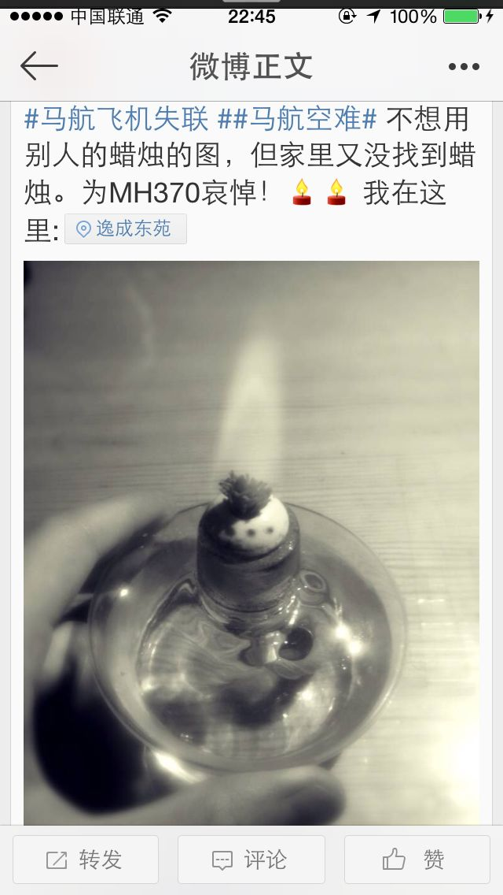

Conversation with 81184027 at Tue 25 Mar 2014 12:38:59 PM CST on 154115835 (webqq)
(03/24/2014 10:45:18 PM) 1725750290: 吵毛
(03/24/2014 10:49:37 PM) 355344083: 算吧
(03/24/2014 10:46:11 PM) 埃及无雪: :[:[:[:[
(03/24/2014 10:46:20 PM) 355344083: 苹果啊
(03/24/2014 10:47:01 PM) 355344083: 跟我们老百姓没关系啊
(03/24/2014 10:48:01 PM) 艾文博晶: 有时间看看群里的书吧 这个和家属状态还是有点关系的
(03/24/2014 10:51:28 PM) 艾文博晶: 每个人还是需要自己站起来 就算受伤了也要自己准备创可贴
(03/24/2014 10:51:48 PM) 355344083: 又卫生巾啊
(03/24/2014 10:45:38 PM) 心成长-辽宁: 马航走了:'(
(03/24/2014 10:45:18 PM) 天赋@霸气: 吵毛
(03/24/2014 10:49:37 PM) 让自己成熟: 算吧
(03/24/2014 10:46:11 PM) 埃及无雪: :[:[:[:[
(03/24/2014 10:46:20 PM) 让自己成熟: 苹果啊
(03/24/2014 10:47:01 PM) 让自己成熟: 跟我们老百姓没关系啊
(03/24/2014 10:48:01 PM) 艾文博晶: 有时间看看群里的书吧 这个和家属状态还是有点关系的
(03/24/2014 10:51:28 PM) 艾文博晶: 每个人还是需要自己站起来 就算受伤了也要自己准备创可贴
(03/24/2014 10:51:48 PM) 让自己成熟: 又卫生巾啊
(03/24/2014 10:45:38 PM) 心成长-辽宁: 马航走了:'(
(03/24/2014 10:45:51 PM) 埃及无雪: 
(12:50:31 PM) 光: 如果你孤身独处，你就完全属于你自己；如果你只有一个同伴，那你只剩下一半属于自己，或者更少些。这就与同伴的言行举止轻率程度有关，同伴越多，你将陷入 更深的麻烦中。你会说，我离开他们，走自己的路，就能更好地研究自然事物的各种形态。我要告诉你，那更不好办。因为你难免要听到他们闲 谈。........你若要友谊，那就到你的画室中寻找。@达芬奇
(12:51:38 PM) 光: 人生多美好却不能长久。我们受诺言的欺骗，受时间的哄骗，死亡嘲弄忧烦；生活的焦虑是毫无价值的。@达芬奇
(12:52:19 PM) 光: 如果你按照品德的标准约束自身，你对世界将无过分的希求。@达芬奇
(01:07:57 PM) 光: 《换个活法》的副标题是：临终前会后悔的25件事。这是一本临终医院的医生，收集和病人的交流，通过自己的思考，写成的一本书。里面珍贵的记录了许多人临 终前的感慨。因为他们的遗憾依然还在，但是他们人却不在了。有时候人生是很奇妙，当你不在意的时候，一生在如流水般走过；当你在意的时候，猛然间，自己已 经快走到人生尽头。所以，能过上少些遗憾的人生，应该是每个人都期盼的。
但人生就是这么多不如意吧。多多少少，总会留下些遗憾。但是总是在快走完这一生的时候，才会意识到。这本书，就是告诉人们，那些应该尽早留意的事情。让自己多些准备，少些遗憾。
书中记录了25种遗憾。分别是：
1，没做自己想做的事；2，没有实现梦想；3，做过对不起良心的事；4，被感情左右度过一生；5，没有尽力帮助过别人；6，过于相信自 己；7，没有妥善安置财产；8，没有考虑过身后之事；9，没有回故乡；10，没有享受过美食；11，大部分时间都用来工作；12，没有去想去的地方旅 行；13，没有和想见的人见面；14，没能谈一场永存记忆的恋爱；15，一辈子都没有结婚；16，没有生育孩子；17，没有让孩子结婚；18，没有注意身 体健康；19，没有戒烟；20，没有标明自己的真实意愿；21，没有认清活着的意义；22，没有留下自己生存过的证据；23，没有看透生死；24，没有信 仰；25，没有对深爱的人说“谢谢”
(01:09:34 PM) 光: 书中有一些话，摘录如下：
“无论选择何种活法，都不要压抑与忍耐地活着。一味勉强自己，什么事都憋在心里，想说的不肯说，想做的不去做，完全失去自我，只是为他人而活，过分在意别人的看法，从而无限度的隐忍，这样的人生是很辛苦的，也是最容易留下遗憾的。”
“人生就像个旅行团，反正你已经加入了，不走完全程，岂不可惜，不如多走走，多看看，尽情享受每一天，看遍天下美景。”
“人之所以会后悔，不是因为没有实现梦想，而多半是因为没能尽百分百的力量实现梦想。”
“开心也好，不开心也好，人生只有一次。无论多么不如意，第二天太阳照常升起，时间不会因为你的痛苦而停驻。如果每天保持开朗的心情，那么你的人生就赚到了。”
(01:10:14 PM) 光: 开心也好，不开心也好，人生只有一次。无论多么不如意，第二天太阳照常升起，时间不会因为你的痛苦而停驻。如果每天保持开朗的心情，那么你的人生就赚到了
(01:10:37 PM) 光: http://book.douban.com/review/3712258/
(02:03:05 PM) 这一季的花开过后: 11:50:29
【信徒】祷告
2014-3-25 11:50:29
我好感谢上帝哟？四十多斤我自己搬不动我很忧愁又离我位的地方又远，我都就要哭了，就祷告求主帮助我，我说主啊父亲，求你帮助我，若是这书与人有益的话求主帮助我，我求父帮助我，我很忧愁自己搬不动那时又看不到出租车又没有公交车经过那里的，这么远我怎么办啊，求完父亲我正忧愁时有个不认识的过路陌生人男中年人已经走很远很远回头问我要不要他帮忙，我急忙说要要，他就回头走回来帮助我提四十二斤的书，帮我提到公交车站坐车回来，在车上又有一个年轻的小伙子帮助我提到我的住处。太感谢上帝了，我很久没有搬过这么重的东西我搬不动是上帝帮助了我感动了他们的心作出的好事，若不是求上帝也很少机会很难遇上这样的好心人，一切荣耀归与我们在天上的父，他是真神活神，有求必应的父亲，永远不离弃我们的父亲我很感动:[:[
(02:03:38 PM) 这一季的花开过后: 那个，我就想问问，你感谢人家小伙子了吗？
(02:04:17 PM) 阿萨汗蛋包飯: 太感谢上帝了:O
(02:07:18 PM) 这一季的花开过后: 我们村每个月都给70岁以上老年人发放养老金，一老太太张口就说：感谢神，感谢主!______把我给气的啊，这明明是从村里的集体收入中拿出的钱，倒成了上帝的功劳了，差点没忍住把钱抢回来让她跟她家上帝领钱的冲动。我勒个去！！！！！
(02:07:57 PM) 阿萨汗蛋包飯: :D
(02:09:36 PM) 这一季的花开过后: 极度怀疑那个叫“祷告”的信得是伪基督！假上帝！
(02:10:49 PM) 这一季的花开过后: 那个蛋包饭同学，看到你笑的这么开心，我由衷的感到幸福。
(02:17:07 PM) 大迷糊: 花开举的例子不错
(02:17:48 PM) 阿萨汗蛋包飯: 基督教太复杂
(02:18:08 PM) 阿萨汗蛋包飯: 上帝究竟是耶和华还是耶稣
(02:18:47 PM) 大迷糊: 越是不太平的地方教会就越多
(02:19:04 PM) 阿萨汗蛋包飯: 是的，人需要精神寄托
(02:19:55 PM) 大迷糊: 对，仅仅是寄托和美丽的幻想
(02:20:24 PM) 大迷糊: 事实是改变不了的
(02:21:18 PM) 阿萨汗蛋包飯: 比如飞机坠海消失了，神手安排的，把精神寄托到了至高无上的神手之上
(02:21:20 PM) 这一季的花开过后: 就如我妈妈因信全能神教投井自杀一样，他们给邪教出过一道题。我的理解是无解。
一个信神的人过马路时被车撞了——神的惩罚
他又被人救了——神的救赎
送到医院还是死了——神的惩罚
结果是假死，有活过来了——神的救赎
活了两天又死了——神的惩罚
(02:21:45 PM) 阿萨汗蛋包飯: 投井自杀，:!
(02:22:52 PM) 这一季的花开过后: 是的。在明知道还有三四天就要当奶奶的情况下。还是义无反顾，视死如归
(02:24:20 PM) Sjy: 怎么会突然想死呢 是上面的要求吗
(02:24:24 PM) 大迷糊: 是也是神，非也是神，所谓的神，对任何事都能做出可笑的解释，更可笑的是有人信了
(02:24:49 PM) 这一季的花开过后: 所以我说对生命和亲情乃至家庭的冷漠与无知有所关联，但无知不是关键所在。很多信邪教的甚至是大学生老教授，他们缺的不是文化知识。
(02:25:23 PM) 这一季的花开过后: 共享文件 屠戮灵魂的邪教铸成我此生最痛的罪.doc
(02:25:17 PM) 这一季的花开过后:
(02:25:23 PM) 这一季的花开过后: 共享文件 1 个 14:25:17
qun.qq.com/god/images/share-word.gif 屠戮灵魂的邪教铸成我此生最痛的罪.doc
立即下载查看全部
(02:25:23 PM) 大迷糊: 扭曲人的观点，
(02:26:17 PM) 河北-邯郸&格调: 怎样才能破掉邪教的这种思维？
(02:26:44 PM) 这一季的花开过后: 我把自己的故事上传到群共享了，想了解的可以看看
《屠戮灵魂的邪教铸成我此生最痛的罪》
(02:27:17 PM) 大迷糊: 唯一的办法就是对生活充满希望，用双手去打拼
(02:28:10 PM) 大迷糊: 一个信念，天上没有掉馅饼的事，
(02:28:42 PM) 大迷糊: 自己可以改变自己的未来
(02:29:05 PM) 大迷糊: 未来永远是个未知，
(02:29:36 PM) 大迷糊: 需要的是靠自己来改变
(02:31:51 PM) 这一季的花开过后: 如果你是人而且有足够的理智抵制各种诱惑，一直保持着戒备心而且不知疲惫。是可以出淤泥而不染的。但一些人生来就是为了当鱼的，当你以鱼的视角去看世界，天上是有可能掉馅饼的，但每一个馅饼里都是满当当的钩子。
(02:33:23 PM) 大迷糊: 对生活充满信心和快乐
(02:37:39 PM) 这一季的花开过后: 很穷也可以很开心？
(02:41:18 PM) 大迷糊: 双手是干什么的？
(02:44:33 PM) 大迷糊: 白手起家的例子有很多，不能说别人聪明能力强什么的，只能说自己懒
(02:45:05 PM) 大迷糊: 这个也需要机遇
(02:46:23 PM) 大迷糊: 也可以去找工作啊，虽然累点，养活自己肯定是可以的，不要祈祷神来帮你，
(02:46:37 PM) 这一季的花开过后: 很对。当今社会的确是比以往任何时代都更加的“一切向钱看”。
(02:47:01 PM) 这一季的花开过后: 我不信神的。:D
(02:48:45 PM) 这一季的花开过后: 就一个老婆和老丈人眼中的一个缺乏上进心的说白了不能挣很多钱的“矮穷丑”
(02:51:28 PM) 这一季的花开过后: 各个时期的各个人对于贱人的解释是不尽相同的，譬如——工资决定收入，收入决定地位，地位决定价格，价格决定价值。以贫富论贵贱的大时代
(02:52:52 PM) 大迷糊: 有钱又如何，你可以告诉你老丈人，嫁给有钱人未必能够幸福
(02:53:08 PM) 大迷糊: 金钱不等于幸福
(03:55:36 PM) The account has disconnected and you are no longer in this chat. You will automatically rejoin the chat when the account reconnects.